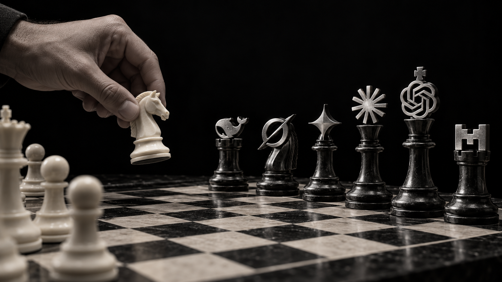
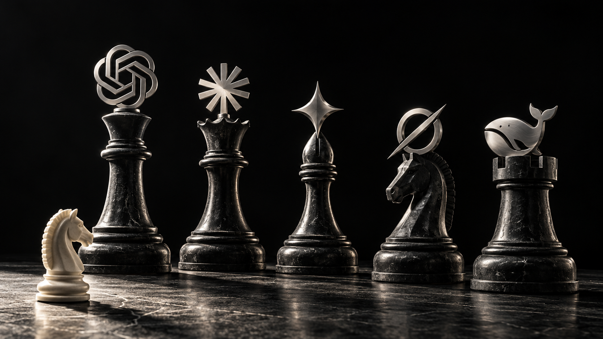
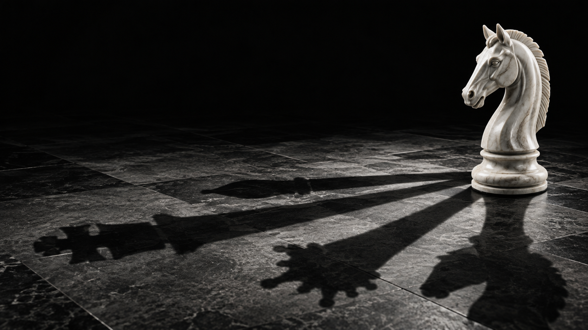

Your concept: a human knight move against GPT, Claude, Gemini and Grok, with DeepSeek and Mistral rooks.

Human intuition opposite a glass AI hand. A direct visual for “a different mind.”

A small human knight faces a sculptural lineup of model opponents, without a chessboard.

One physical knight casts different chess-piece shadows. The quietest composition for the headline.